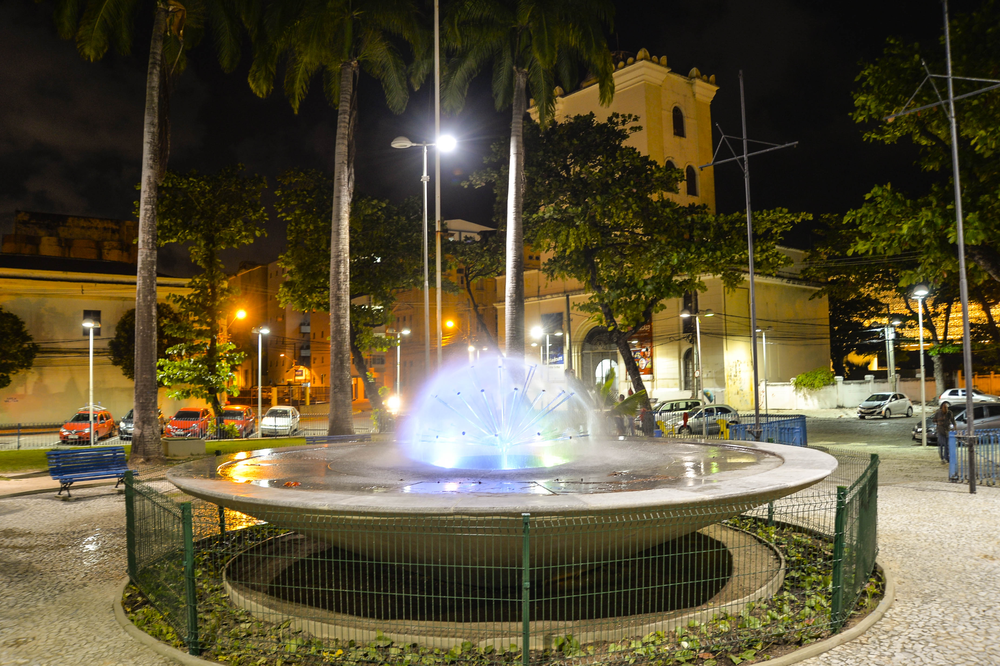

Praça do Arsenal

A Praça do Arsenal é um lugar encantador no Recife Antigo, a poucos passos do Marco Zero. Esta praça histórica é famosa por sua arquitetura deslumbrante e abriga o Centro Cultural Cais do Sertão, que celebra a cultura nordestina.
Rua do Bom Jesus

A Rua do Bom Jesus é outra joia do Recife Antigo. Conhecida por suas casas coloridas e charme arquitetônico, esta rua é um ótimo lugar para passear, apreciar a arte urbana e explorar a história do Recife. Ela também abriga a sinagoga Kahal Zur Israel, a mais antiga das Américas.